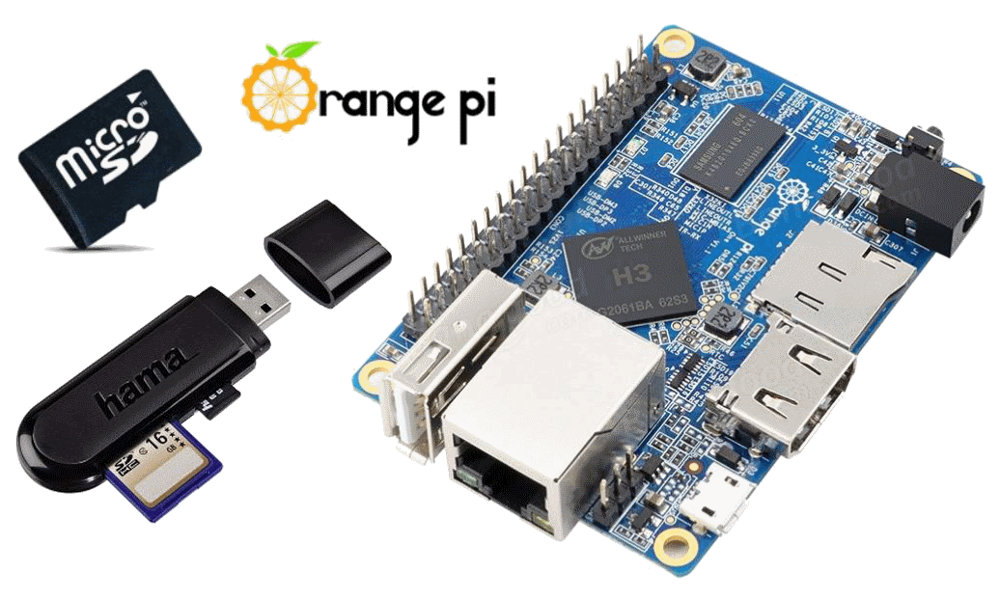
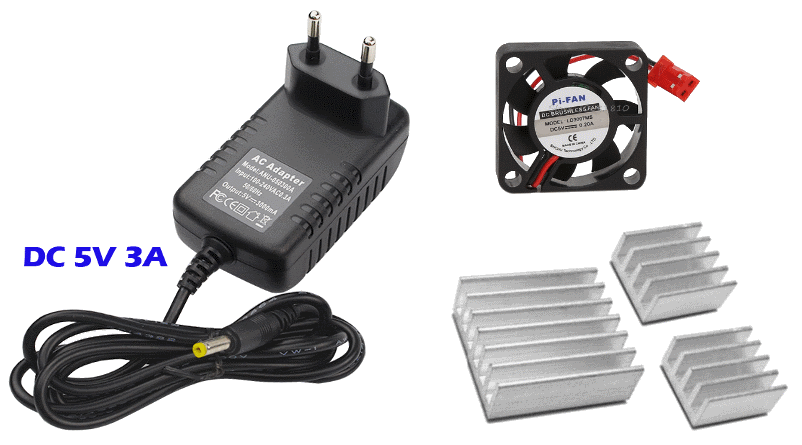
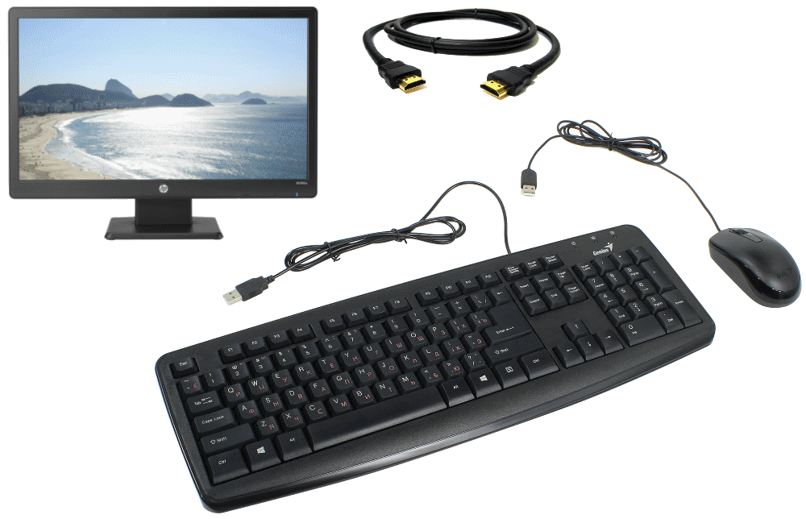
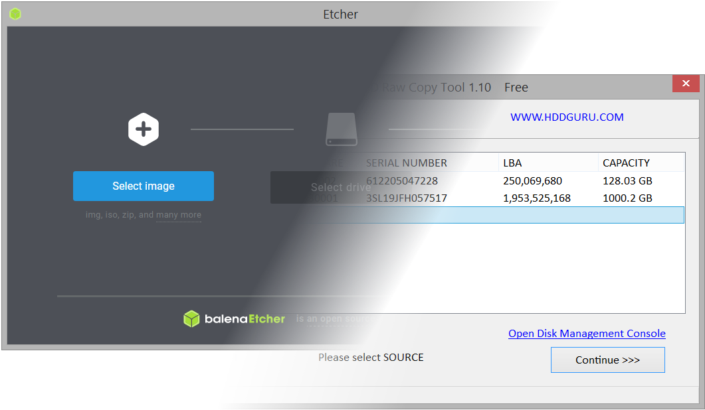
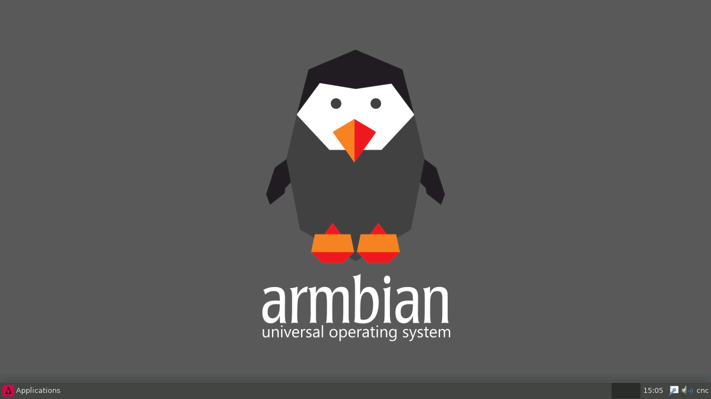
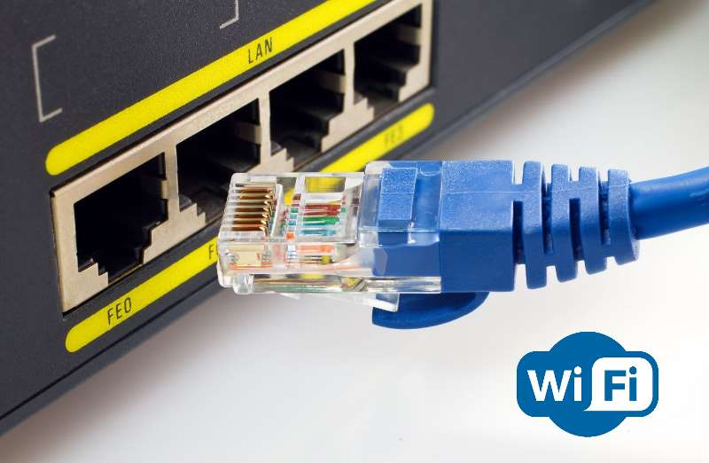
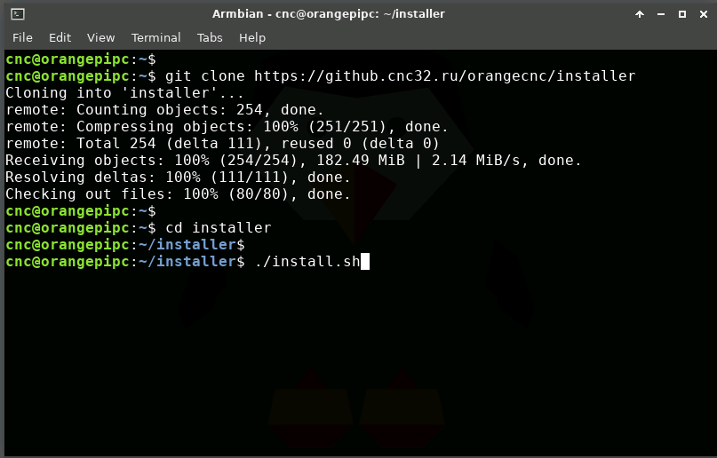
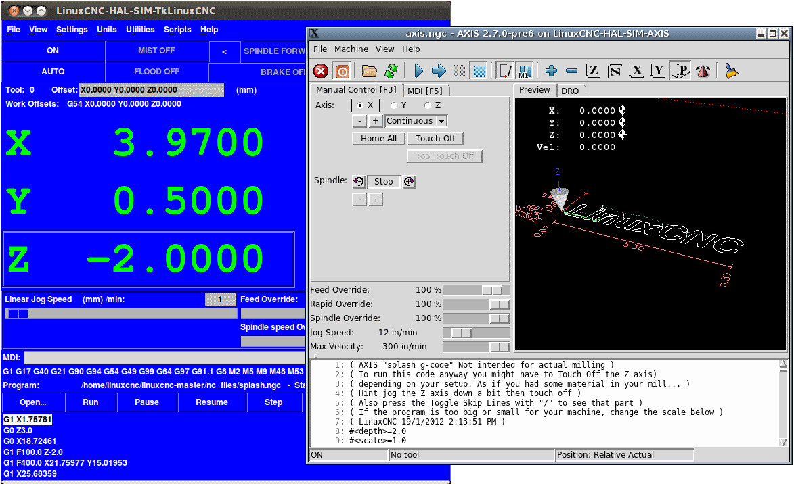

You need to get a SBC (single board computer) with
Allwinner H3 SOC installed.
You also need the fastest Micro SD card (class 10 or better) and the SD card reader.
There's a SD card reader in all modern laptops, by the way.

You need a power supply (DC 5V) with current limit of 2A or better.
Please, use a radiator (with fan if possible) for the board's CPU.
Without a radiator your board's CPU can be destroyed in short time and board will become a brick.

You need a display, USB keyboard and USB mouse to control your mini PC like desktop PC.
If there is no a HDMI input port on your display,
use any HDMI-VGA/HDMI-DVI converter.
You also need an Ethernet cable to connect a board to the Internet.

Download a SD card image archive for your board from the Armbian website.
Unpack the archive and use Etcher or
HDD Raw Copy Tool
to burn this image to your Micro SD card.

Insert your Micro SD card into your board and power up the board.
You will see a loading process data running on the screen.
A minute after you will need to type a login/password for the admin account.
Login is root and the password is 1234.
Next step is creating a new user account.
Input a required data and you will see the user desktop screen.

For the quick installation you will need an Internet connection.
If your board has a Wi-Fi option, connect the board to the Internet via external Wi-Fi router.
If your board has only an Ethernet socket, connect the board to the Internet via external Ethernet router.
Make sure external router has the DHCP option enabled.

Now we can start the installation process.
Start the Terminal Emulator through the Applications start menu and type these commands:
git clone https://github.com/h3cnc/installer
cd installer
./install.sh
First one will download the installer, the last one will starts the installation.
cd installer
./install.sh

After a successful install you will see a new icons on the desktop.
These icons are the LinuxCNC test configuration launchers.
Number in the name means number of axes.
Т means the tklinuxcnc user interface,
A means the axis user interface.

More info about
tklinuxcnc
and axis
user interfaces you can find in official LinuxCNC docs.
At this moment your new CNC system is ready to use.
Of course you need to connect a stepper motor drivers, endswitches and other modules to control a real CNC machine.
You will find more info about external devices wiring on the next page of the docs.